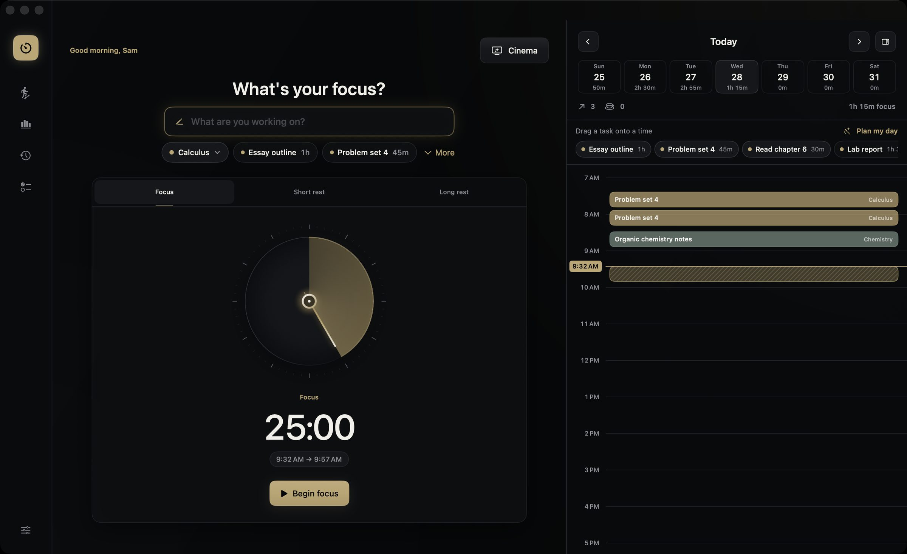
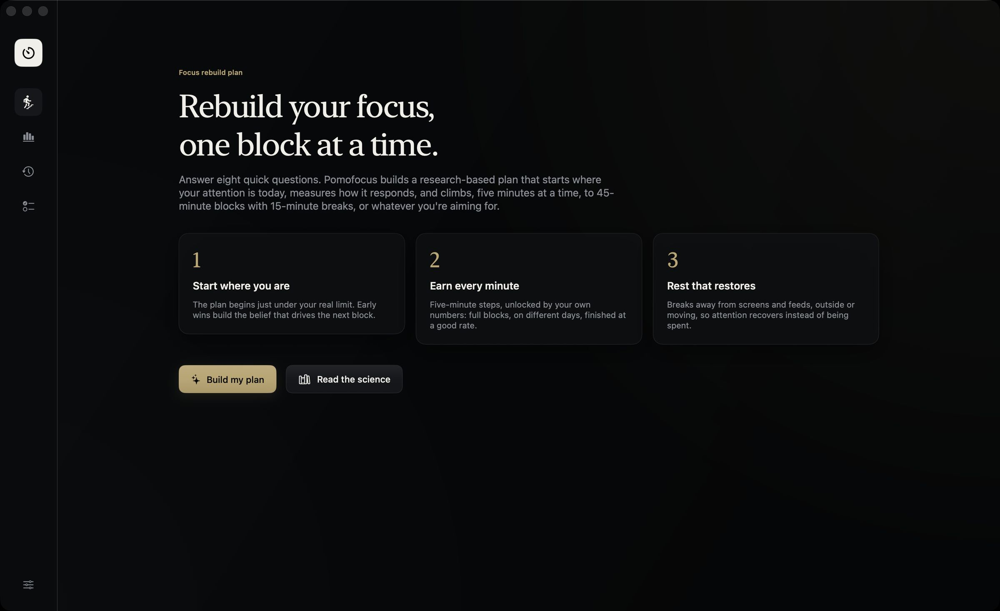

A list for each class
Keep a list for each course, add tasks like "Problem set 4" with a rough time, and start a block straight from a task. The time you spend counts toward it.
Pomofocus for students
Pomofocus for Mac is a free Pomodoro timer built around how studying really goes. Some days you can do three hours; some days twenty minutes feels like a lot. It works with both.

The Pomodoro technique is simple: study for 25 minutes, take a five-minute break, and after four rounds take a longer one. A 25-minute block is much easier to start than a whole evening of revision, and the breaks stop it from turning into three hours of rereading the same page.
Pomofocus starts with those lengths and lets you change them. When you finish, you can see what you got done, which helps more on a bad week than you'd expect.
Keep a list for each course, add tasks like "Problem set 4" with a rough time, and start a block straight from a task. The time you spend counts toward it.
Drag tasks into the free gaps on today's timeline, or let Plan my day fit them around lectures and shifts from your calendar.
With the focus plan on, breaks get a little longer after a demanding block and nudge you away from the screen, so you come back to the next one with something left.
Focus reset has short guided sessions for a busy mind or for coming back after a break, over rain, soft music or binaural beats.
A ten-second daily check-in. Over a few weeks you can see how exam season, sleep or friends change how your days feel, and how your focus goes on good days and hard ones.
The countdown sits in the menu bar and on desktop widgets, and Cinema puts it full screen on a second monitor, a bit like the clock in an exam hall.
If you can't sit through 25 minutes right now, you're not alone, and you don't have to start there. Answer eight questions and the focus plan starts you just under what you can manage today.
Each time you finish full blocks on different days, it adds five minutes. A rough block makes the next one shorter, and after a week away it eases you back in instead of expecting you to pick up where you stopped. The app shows the studies behind each step.

There's no account, no subscription, no ads and no student plan to sign up for. Pomofocus is open source, so anyone can check what it does.
Your sessions and check-ins stay in one file on your Mac. Nothing is sent anywhere, so nobody else sees them.
Yes. Pomofocus for Mac is free for everyone and open source. There's no student plan to sign up for, no trial and no ads.
It needs macOS 14 Sonoma or newer on an Apple silicon Mac (M1 or later). Some school-managed Macs only allow apps from the App Store or from the IT department; if yours does, it may not open.
Yes. Set the focus length to the length of the paper, say 90 minutes, and leave overtime on if you want to see how far over you went. Cinema mode puts the clock full screen so it reads like an exam hall clock.
There isn't one right answer. 25 minutes is a good place to start. If that feels too short or too long, the focus plan starts just under what you can manage today and adds five minutes at a time as you finish blocks.
No. Everything stays on your Mac in one file. There's no account and nothing is sent anywhere, so nobody else can see your sessions or your check-ins.
No. Pomofocus for Mac is an independent Mac app and isn't connected to the pomofocus.io website, which is a separate timer that runs in the browser.
Unzip it, drag Pomofocus into Applications, and allow it once under System Settings → Privacy & Security. Full install steps.